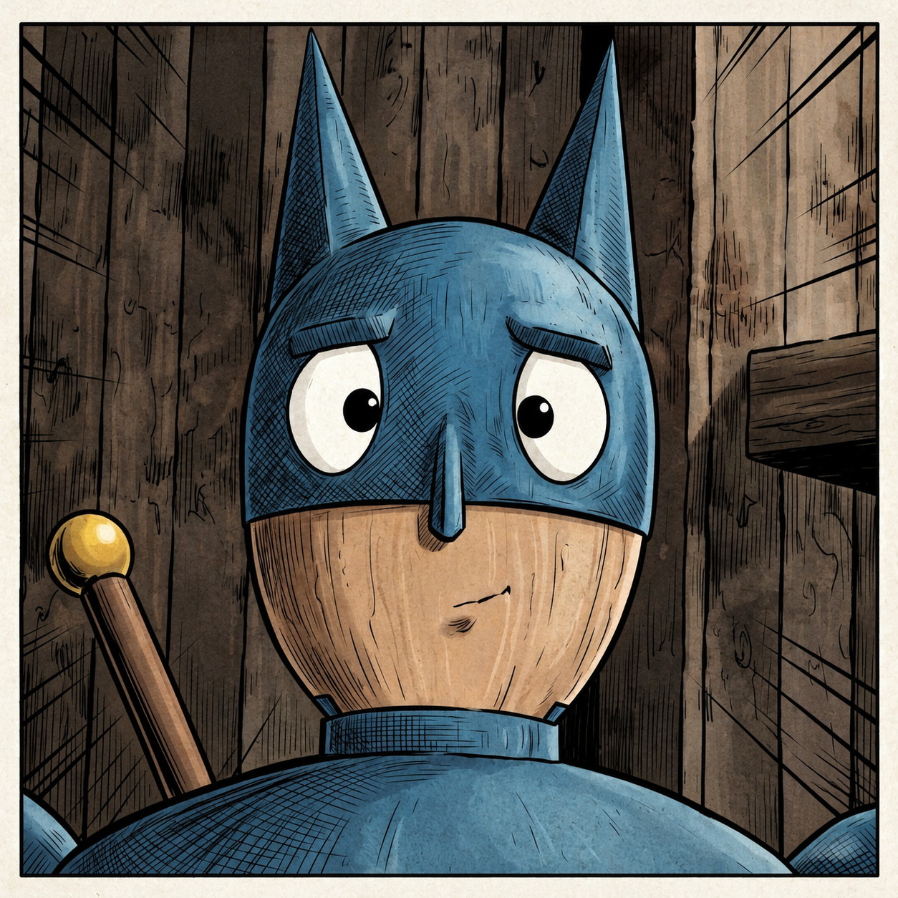

Batpolygon West
Batpolygon West est un jeu d'action-aventure western en monde ouvert photoréaliste propulsé par Rust et le moteur Bevy.
Alors que Batpolygon arrive dans le paisible village de Wern Creek en compagnie de son automate Ender, les pillards du gang "Grand Pillar de la muerte" mettent la bourgade à feu et à sang et enlèvent Ender pour le livrer à leur chef, le redoutable El Gran Gordo.
Armé de sa légendaire Épée en Or pour pourfendre les bandits dans des duels sanglants, d'une Canne à Pêche Tactique servant de grappin cinétique et de sa cape profilée pour planer et fondre en piqué, Batpolygon s'élance à travers les canyons sauvages pour libérer son compagnon !
*Si vous trouvez un ou plusieurs bugs, n'hésitez pas à me les faire remonter sur mon Discord.
Trailer & Présentation :
Mécaniques & Univers Western
Alternance fluide entre arts martiaux au corps-à-corps non-létaux et frappes sanglantes à l'Épée en Or tranchant net les assaillants.
Harponnez les bandits à distance, arrachez leurs carabines, renvoyez leurs bâtons de dynamite et hissez-vous sur les toits et falaises du canyon.
Déployez votre cape semi-rigide pour planer sur de longues distances ou plongez en piqué vertical pour vous écraser sur les positions ennemies.
Bataille en 3 phases dans le quartier général du tyran : assauts massifs au marteau de mine, tirs de minigun et vagues d'hommes de main.
Compas immersif détectant l'état d'alerte des hors-la-loi et transmissions radio d'Ender en voix Animalese pour vous guider.
Architecture ECS modulaire sous Bevy 0.14+, textures PBR cinématiques et cinématique d'intro fluide sans aucun temps de chargement.
Changelog :
Version 1.0.0 [Lancement One-Shot]
Nouveautés & Architecture Initiale
- Moteur complet sous Rust & Bevy Engine avec shaders PBR cinématiques.
- Système cinématique d'introduction sans chargement vers la prise en main du joueur.
- Mécanique de combat dual-stance : corps-à-corps non-létal et découpe physique gore à l'Épée en Or.
- Physique de grappin balistique pour la canne à pêche tactique.
- Synthèse procédurale de voix Animalese pour Ender et les habitants de Wern Creek.
- HUD diégétique avec jauges de santé/bouclier auto-régénérantes et radar circulaire de menace.